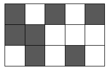
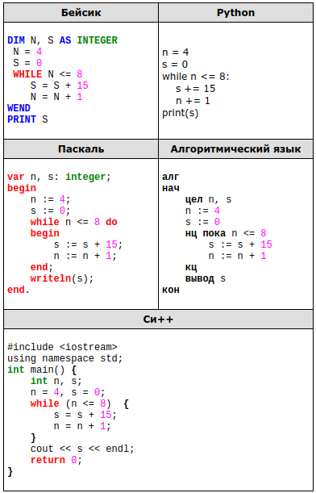
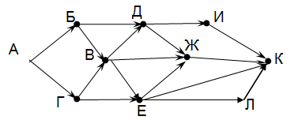
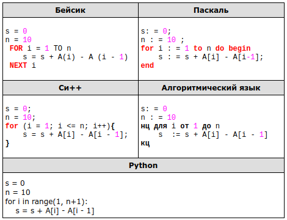
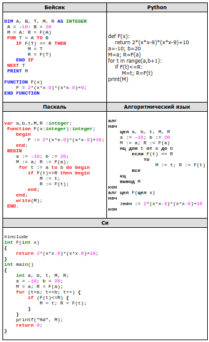
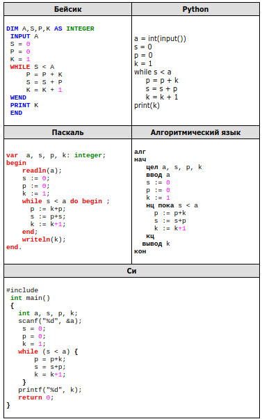
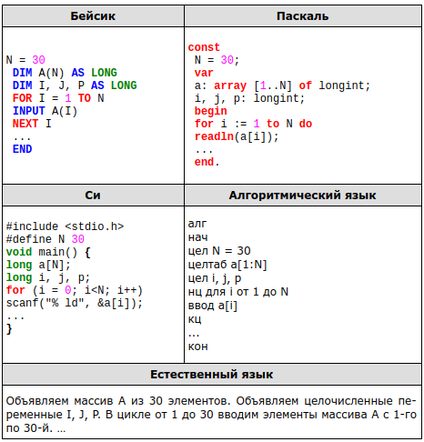

Задание 1
Даны 4 числа, они записаны с использованием различных систем счисления. Укажите среди этих чисел то, в двоичной записи которого содержится ровно 6 единиц. Если таких чисел несколько, укажите наибольшее из них.
- 6310·410
- F816+110
- 3338
- 111001112
Задание 2
Логическая функция F задаётся выражением ¬x /\ y /\ (z → w).
На рисунке приведён фрагмент таблицы истинности функции F, содержащий все наборы аргументов, при которых функция F истинна.
Определите, какому столбцу таблицы истинности функции F соответствует каждая из переменных w, x, y, z.
| Переменная 1 | Переменная 2 | Переменная 3 | Переменная 4 | Функция |
| ??? | ??? | ??? | ??? | F |
| 1 | 0 | 0 | 0 | 1 |
| 1 | 0 | 1 | 0 | 1 |
| 1 | 1 | 0 | 1 | 1 |
В ответе напишите буквы w, x, y, z в том порядке, в котором идут соответствующие им столбцы (сначала – буква, соответствующая первому столбцу; затем – буква, соответствующая второму столбцу, и т. д.). Буквы в ответе пишите подряд, никаких разделителей между буквами ставить не нужно.
Зaдание 3
Между населёнными пунктами A, B, C, D, E, F построены дороги, протяжённость которых приведена в таблице. (Отсутствие числа в таблице означает, что прямой дороги между пунктами нет.)
| A | B | C | D | E | F | |
| A | 3 | |||||
| B | 9 | 4 | ||||
| C | 3 | 9 | 3 | 8 | ||
| D | 3 | 2 | ||||
| E | 4 | 8 | 2 | 7 | ||
| F | 7 |
Определите длину кратчайшего пути между пунктами A и F (при условии, что передвигаться можно только по построенным дорогам).
Задание 4
Для групповых операций с файлами используются маски имён файлов. Маска представляет собой последовательность букв, цифр и прочих допустимых в именах файлов символов, в которых также могут встречаться следующие символы:
Символ *?» (вопросительный знак) означает ровно один произвольный символ.
Символ «*» (звёздочка) означает любую последовательность символов произвольной длины, в том числе «*» может задавать и пустую последовательность.
Определите, какое из указанных имён файлов удовлетворяет маске: ?*di.t??
- poydi.t
- pogudi.tanx
- 3di.tt9
- melodi.theme
Задание 5
Черно-белое растровое изображение кодируется построчно, начиная с левого верхнего угла и заканчивая в правом нижнем углу. При кодировании 1 обозначает черный цвет, а 0 – белый
Закодируйте таким образом изображение и запишите результат в восьмеричной системе счисления.

Задание 6
Автомат получает на вход четырёхзначное число. По этому числу строится новое число по следующим правилам:
1. Перемножаются первая и вторая, а также третья и четвёртая цифры исходного числа.
2. Полученные два числа записываются друг за другом в порядке убывания (без разделителей).
Пример. Исходное число: 2466. Произведения: 2 × 4 = 8; 6 × 6 = 36.
Результат: 368.
Укажите наименьшее число, в результате обработки которого автомат выдаст число 124.
Задание 7
В некоторые ячейки электронной таблицы записаны числа, как показано на рисунке.
| A | B | C | D | E | F | |
|---|---|---|---|---|---|---|
| 1 | 0 | 1 | 2 | 3 | 4 | 5 |
| 2 | 10 | |||||
| 3 | 20 | |||||
| 4 | 30 | |||||
| 5 | 40 | |||||
| 6 | 50 |
В ячейке D3 записали формулу =$A3 − D$1. После этого ячейку D3 скопировали в ячейку C5. Какое число будет показано в ячейке C5?
Примечание.Знак $ используется для обозначения абсолютной адресации.
Задание 8
Определите, что будет напечатано в результате выполнения программы.

Задание 9
Производится звукозапись музыкального фрагмента в формате стерео (двухканальная запись) с частотой дискретизации 32 кГц и 32-битным разрешением. Результаты записываются в файл, сжатие данных не производится; размер полученного файла – 64 Мбайт. Затем производится повторная запись этого же фрагмента в формате моно (одноканальная запись) с частотой дискретизации 16 кГц и 16-битным разрешением. Сжатие данных не производилось. Укажите размер файла в Мбайт, полученного при повторной записи. В ответе запишите только целое число, единицу измерения писать не нужно.
Задание 10
Сколько слов длины 6, начинающихся с согласной буквы, можно составить из букв Г, О, Д? Каждая буква может входить в слово несколько раз. Слова не обязательно должны быть осмысленными словами русского языка.
Задание 11
Алгоритм вычисления значения функции F(n), где n - натуральное число, задан следующими соотношениями:
F(1) = 2; F(2)=4;
F(n) = 3*F(n−1) − 2*F(n−2) при n >2.
Чему равно значение функции F(7)? В ответе запишите только натуральное число.
Задание 12
В терминологии сетей TCP/IP маской сети называется двоичное число, определяющее, какая часть IP-адреса узла сети относится к адресу сети, а какая — к адресу самого узла в этой сети. Обычно маска записывается по тем же правилам, что и IP-адрес, — в виде четырёх байтов, причём каждый байт записывается в виде десятичного числа. При этом в маске сначала (в старших разрядах) стоят единицы, а затем с некоторого разряда — нули. Адрес сети получается в результате применения поразрядной конъюнкции к заданному IP-адресу узла и маске.
Например, если IP-адрес узла равен 231.32.255.131, а маска равна 255.255.240.0, то адрес сети равен 231.32.240.0. Для узла с IP-адресом 147.192.92.64 адрес сети равен 147.192.80.0. Чему равно значение третьего слева байта маски? Ответ запишите в виде десятичного числа.
Задание 13
При регистрации в компьютерной системе каждому пользователю выдаётся пароль, состоящий из 11 символов и содержащий только символы И, К, Л, М, Н. Каждый такой пароль в компьютерной программе записывается минимально возможным и одинаковым целым количеством байт (при этом используют посимвольное кодирование и все символы кодируются одинаковым и минимально возможным количеством бит). Определите объём памяти, отводимый этой программой для записи 60 паролей. (Ответ дайте в байтах.)
Задание 14
Исполнитель Чертёжник перемещается на координатной плоскости, оставляя след в виде линии. Чертёжник может выполнять команду Сместиться на (a, b) (где a, b — целые числа), перемещающую Чертёжника из точки с координатами (x, у) в точку с координатами (x + а, у + b). Если числа a, b положительные, значение соответствующей координаты увеличивается; если отрицательные, уменьшается.
Например, если Чертёжник находится в точке с координатами (4, 2), то команда Сместиться на (2, −3) переместит Чертёжника в точку (6, −1).
Запись
Повтори k раз
Команда1 Команда2 КомандаЗ
Конец
означает, что последовательность команд Команда1 Команда2 КомандаЗ повторится k раз.
Чертёжнику был дан для исполнения следующий алгоритм:
Повтори 5 paз
Сместиться на (0, 1) Сместиться на (−1, 4) Сместиться на (3, −6) Конец
Координаты точки, с которой Чертёжник начинал движение, (4, 0). Каковы координаты точки, в которой он оказался?
- (15, −6)
- (14, −5)
- (13, −4)
- (12, −3)
Задание 15
На рисунке – схема дорог, связывающих города А, Б, В, Г, Д, Е, Ж, И, К, Л. По каждой дороге можно двигаться только в одном направлении, указанном стрелкой. Сколько существует различных путей из города А в город К?

Задание 16
Укажите наименьшее основание системы счисления, в которой запись десятичного числа 15 имеет ровно три значащих разряда.
Задание 17
В языке запросов поискового сервера для обозначения логической операции «ИЛИ» используется символ «|», а для логической операции «И» – символ «&».
В таблице приведены запросы и количество найденных по ним страниц некоторого сегмента сети Интернет.
| Запрос | Найдено страниц (в тыс.) |
|---|---|
| Жираф | 70 |
| Слон | 112 |
| Моська | 16 |
| Слон & Моська | 5 |
| Жираф & Моська | 0 |
| Жираф | Слон | Моська | 164 |
Какое количество страниц (в тыс.) будет найдено по запросу Слон & Жираф?
Считается, что все запросы выполнялись практически одновременно, так что набор страниц, содержащих все искомые слова, не изменялся за время выполнения запросов.
Задание 18
Для какого из названий животных ложно высказывание:
(Заканчивается на согласную букву) Λ (B слове 6 букв) → (Четвертая буква согласная)?
- Страус
- Леопард
- Верблюд
- Кенгуру
Задание 19
В программе описан одномерный целочисленный массив с индексами от 0 до 10. Ниже представлен записанный на разных языках программирования фрагмент одной и той же программы, обрабатывающей данный массив:

В начале выполнения этого фрагмента в массиве находились числа 0, 10, 20, 30, 40, 50, 60, 70, 80, 90, 100, т.е. А[0]=0, А[1]=10 и т.д. Чему будет равно значение переменной s после выполнения данной программы?
Задание 20
Ниже записана программа. Получив на вход число x , эта программа печатает два числа, L и M. Укажите наибольшее из таких чисел x, при вводе которых алгоритм печатает сначала 3, а потом 0.
var x, L, M: integer;
begin
readln(x);
L:=0; M:=0;
while x > 0 do begin
L:= L + 1;
if x mod 2 = 0 then
M:= M + x mod 10;
x:= x div 10;
end;
writeln(L); write(M);
end
Задание 21
Определите, какое число будет напечатано в результате выполнения следующего алгоритма (для Вашего удобства алгоритм представлен на пяти языках):

Задание 22
У исполнителя Удвоитель две команды, которым присвоены номера:
1. прибавь 1,
2. прибавь 4.
Первая из них увеличивает число на экране на 1, вторая увеличивает его на 4. Программа для Удвоителя — это последовательность команд. Сколько есть программ, которые число 3 преобразуют в число 16?
Задание 23
Сколько существует различных наборов значений логических переменных x1, х2, хЗ, х4, х5, хб, х7, х8, x9, x10 которые удовлетворяют всем перечисленным ниже условиям?
(x1 —> х2) —> (хЗ—> х4) = 1
(хЗ —> х4) —> (х5 —> хб) = 1
(х5 —> хб) —> (х7 —> х8) = 1
(х7 —> х8) —> (х9 —> х10) = 1
В ответе не нужно перечислять все различные наборы значений переменных x1, х2, хЗ, х4, х5, хб, х7, х8, x9, x10 при которых выполнена данная система равенств. В качестве ответа Вам нужно указать количество таких наборов.
Задание 24
Дано натуральное число A. Требуется вывести такое максимально возможное натуральное число K, при котором сумма 1 + (1 + 2) + (1 + 2 + 3) + … + (1 + 2 + … + K) не превышает A. Для решения этой задачи ученик написал программу, но, к сожалению, его программа – неправильная. Ниже эта программа для Вашего удобства приведена на пяти языках программирования.

Последовательно выполните следующее.
1. Напишите, что выведет эта программа при вводе числа 17.
2. Приведите пример значения A, при вводе которого программа выведет верный ответ. Укажите этот ответ.
3. Найдите в программе все ошибки (их может быть одна или несколько). Для каждой ошибки выпишите строку, в которой она допущена, и приведите эту же строку в исправленном виде. Достаточно указать ошибки и способ их исправления для одного языка программирования. Обратите внимание: Вам нужно исправить приведённую программу, а не написать свою. Вы можете только заменять ошибочные строки, но не можете удалять строки или добавлять новые. Заменять следует только ошибочные строки: за исправления, внесённые в строки, не содержащие ошибок, баллы будут снижаться.
Задание 25
Дан целочисленный массив из 30 элементов. Элементы массива могут принимать целые значения от 0 до 10000 включительно. Опишите на естественном языке или на одном из языков программирования алгоритм, позволяющий найти и вывести произведение двузначных элементов массива, с суммой цифр, кратной 6. Гарантируется, что в исходном массиве есть хотя бы один элемент, значение которого является двузначным числом, и при этом сумма его цифр делится на 6. Исходные данные объявлены так, как показано ниже на примерах для некоторых языков программирования и естественного языка. Запрещается использовать переменные, не описанные ниже, но разрешается не использовать некоторые из описанных переменных. Исходные данные всегда подобраны так, что результат произведения не выходит за пределы объявленных типов данных.

В качестве ответа Вам необходимо привести фрагмент программы (или описание алгоритма на естественном языке), который должен находиться на месте многоточия. Вы можете записать решение также на другом языке программирования (укажите название и используемую версию языка программирования, например Free Pascal 2.4) или в виде блок-схемы. В этом случае Вы должны использовать те же самые исходные данные и переменные, какие были предложены в условии (например, в образце, записанном на естественном языке).
Задание 26
Два игрока, Петя и Ваня, играют в следующую игру. Перед игроками лежит куча камней. Игроки ходят по очереди, первый ход делает Петя. За один ход игрок может добавить в кучу один камень или увеличить количество камней в куче в три раза. Например, имея кучу из 15 камней, за один ход можно получить кучу из 16 или 45 камней. У каждого игрока, чтобы делать ходы, есть неограниченное количество камней.
Игра завершается в тот момент, когда количество камней в куче становится не менее 37. Победителем считается игрок, сделавший последний ход, то есть первым получивший кучу, в которой будет 37 или больше камней. В начальный момент в куче было S камней, 1 ≤ S ≤ 36.
Будем говорить, что игрок имеет выигрышную стратегию, если он может выиграть при любых ходах противника. Описать стратегию игрока – значит, описать, какой ход он должен сделать в любой ситуации, которая ему может встретиться при различной игре противника.
Выполните следующие задания. Во всех случаях обосновывайте свой ответ.
1. У кого из игроков есть выигрышная стратегия при S = 12? Опишите эту стратегию.
2. Укажите два таких значения S, при которых у Пети есть выигрышная стратегия, причём Петя не может выиграть за один ход, но Петя может выиграть своим вторым ходом независимо от того, как будет ходить Ваня. Для каждого из указанных значений S опишите выигрышную стратегию Пети.
3. Укажите значение S, при котором у Вани есть выигрышная стратегия, позволяющая ему выиграть первым или вторым ходом при любой игре Пети, однако у Вани нет стратегии, которая позволит ему гарантированно выиграть 1-м ходом.
Для указанного значения S опишите выигрышную стратегию Вани. Постройте в виде рисунка или таблицы дерево всех партий, возможных при этой выигрышной стратегии Вани. На рёбрах дерева указывайте, кто делает ход, в узлах — количество камней в позиции.
Задание 27
Радиотелескоп пытается получать и анализировать сигналы, поступающие из различных участков космоса, при этом различные шумы переводятся в последовательность целых неотрицательных чисел. Чисел может быть очень много, но не может быть меньше трёх. Все числа различны. Хотя бы одно из чисел нечётно.
В данных, полученных из одного участка, выделяется основное подмножество чисел. Это непустое подмножество чисел (в него могут войти как одно число, так и все поступившие числа), такое, что их сумма нечётна и максимальна среди всех возможных непустых подмножеств с нечётной суммой. Если таких подмножеств несколько, то из них выбирается то подмножество, которое содержит наименьшее количество элементов.
Вам предлагается написать программу (укажите используемую версию языка программирования, например, Borland Pascal 7.0), которая будет обрабатывать результаты, приходящие из одного участка, находя основное подмножество. Перед текстом программы кратко опишите используемый Вами алгоритм решения задачи. На вход программе в первой строке подаётся количество сигналов N. В каждой из последующих N строк записано одно целое неотрицательное число, не превышающее 109.
Вам предлагается два задания, связанных с этой задачей: задание А и задание Б. Вы можете решать оба задания или одно из них по своему выбору. Итоговая оценка выставляется как максимальная из оценок за задания А и Б. Если решение одного из заданий не представлено, то считается, что оценка за это задание — 0 баллов. Задание Б является усложнённым вариантом задания А, оно содержит дополнительные требования к программе.
A.Напишите на любом языке программирования программу для решения поставленной задачи, в которой входные данные будут запоминаться в массиве, после чего будут проверены все возможные пары элементов. Перед программой укажите версию языка программирования.
Обязательно укажите, что программа является решением задания А. Максимальная оценка за выполнение задания А — 2 балла.
Б. Напишите программу для решения поставленной задачи, которая будет эффективна как по времени, так и по памяти (или хотя бы по одной из этих характеристик). Программа считается эффективной по времени, если время работы программы пропорционально количеству полученных показаний прибора N, т.е. при увеличении N в k раз время работы программы должно увеличиваться не более чем в k раз. Программа считается эффективной по памяти, если размер памяти, использованной в программе для хранения данных, не зависит от числа N и не превышает 1 килобайта.
Перед программой укажите версию языка программирования и кратко опишите использованный алгоритм. Обязательно укажите, что программа является решением задания Б. Максимальная оценка за правильную программу, эффективную по времени и по памяти, — 4 балла.
Максимальная оценка за правильную программу, эффективную по времени, но неэффективную по памяти, — 3 балла.
Напоминаем! Не забудьте указать, к какому заданию относится каждая из представленных Вами программ.
Пример входных данных:
3
123
0
2
Программа должна вывести в порядке возрастания номера сигналов, которые принадлежат основному подмножеству данного участка. Нумерация элементов последовательности ведётся с единицы. Пример выходных данных для приведённого выше примера входных данных: 1 3.